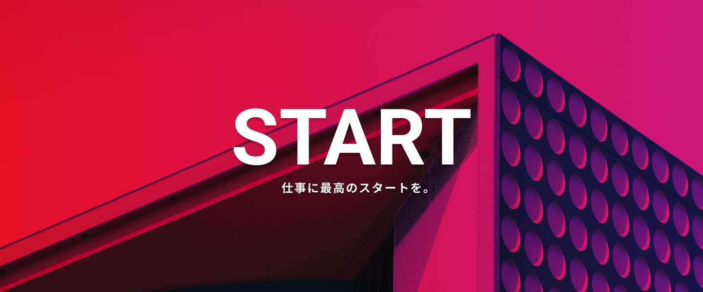
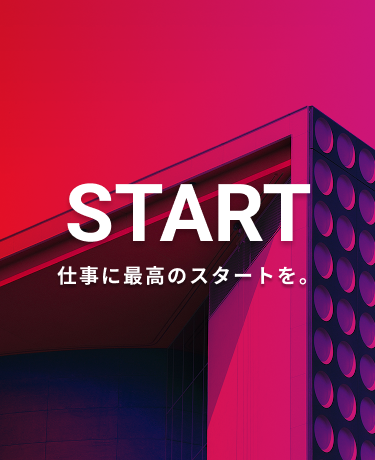

 
ニュース
2030.02.10
コーポレートサイトをリニューアルしました。
2030.02.08
採用を強化中です！一緒に働きませんか？
2030.02.02
人材紹介SNS『スタート』をリリースしました。3/31まで新規登録キャンペーンを開催中です！サービス内で使える500ポイントをプレゼント！
サービス
人材紹介業
新規サイトの制作はもちろんサイトリニューアルやランディングページの制作も可能です。
スクール事業
オンラインでWeb制作を学べるスクールを運営しています。
Webメディア運営
人事系メディアやWebデザイン関連のメディアなどを複数運営しています。